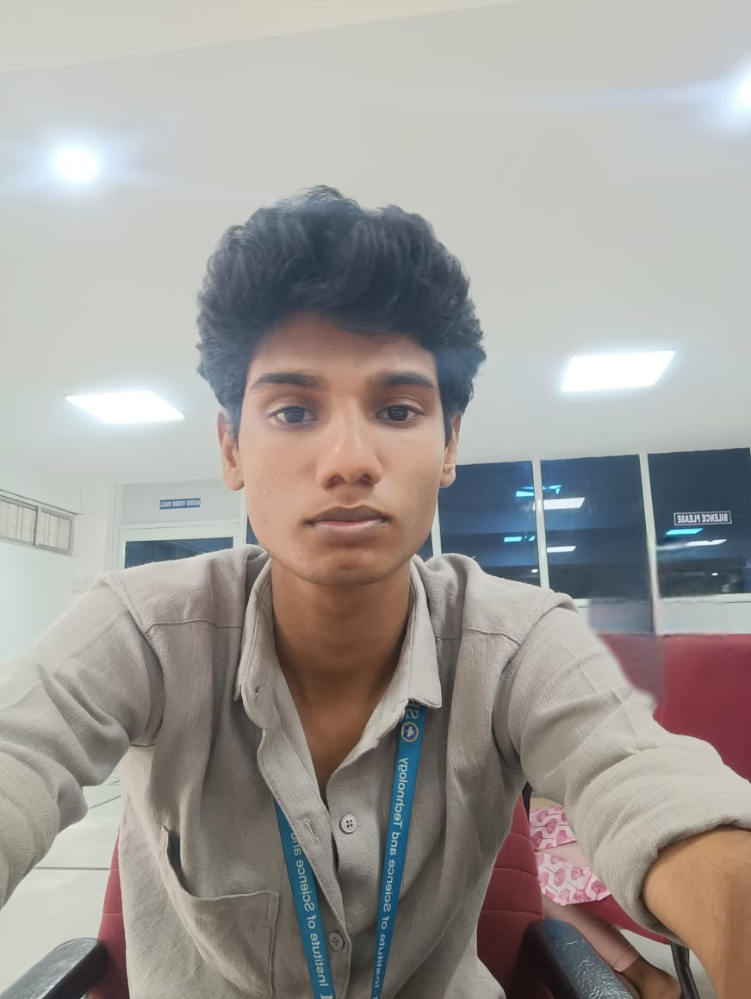

About me
I’m currently a 2nd-year student in Electronics and Communication Engineering, and I love exploring new things in both academics and life. I wouldn’t say I’m the most productive person, but I like getting things done, especially when it involves solving problems or coding something cool. Coding, to me, is like a puzzle—it’s fun to figure out, even if I only do it occasionally. My technical side is balanced with a strong creative streak, which keeps me excited and curious about learning and creating new things.
Creativity is a big part of who I am. I absolutely love writing—it’s one of the ways I express myself and bring ideas to life. Whether it’s working on something innovative or simply letting my thoughts flow onto paper, it gives me a sense of freedom. I also enjoy exploring other creative hobbies that help me think outside the box. Along with that, I’m an active and athletic person. Sports and staying active help me stay disciplined and focused, which plays a big role in how I approach my studies and life in general.
I think one of my strengths is being able to connect with people. I’ve always been good at communicating, whether it’s working in a group, sharing ideas, or just getting to know others. I feel like I have a balance of technical, creative, and social skills that help me grow and navigate college life. Right now, I’m focused on becoming the best version of myself, exploring opportunities, and building skills that will help me create a meaningful and fulfilling future.